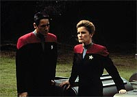
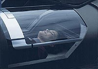
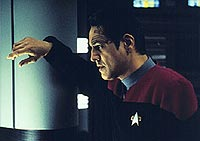
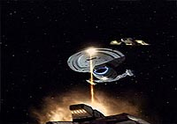
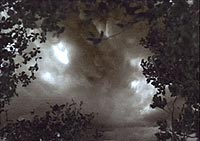

|
MANCHETE
DO EPISDIO
Episódio previsvel traz Vidiians de
volta e tenta desenvolver personagens
Episódio
anterior | Prximo
episódio
Sinopse:
Data Estelar: 49690.1.
Durante uma missão avanada, Janeway e Chakotay so mordidos por
um inseto que os infecta com um vrus incurvel. Quando o Doutor no
consegue trat-los, os dois oficiais decidem por permanecer no
planeta, cujo ambiente bloqueia a progresso da doena terminal.
Aps suprimentos serem transportados da Voyager, Janeway d
tripulao ordem de prosseguir para o quadrante Alfa e coloca
Tuvok no comando da nave.
 A
deciso de deixar a capitã e o primeiro-oficial para trs atinge
a tripulao, e o grupo pede a Tuvok que v ao encontro de um
grupo de naves Vidiians, sabendo que o conhecimento médico avanado
dos alienígenas poderia incluir uma cura para o vrus. Tuvok se
recusa, j que Janeway havia proibido a tripulao de contatar os
traioeiros Vidiians, conhecidos por matar sem d potenciais
doadores de rgos para ajudar a combater a doena que os mata
lentamente, a fagia.
No planeta, Janeway trabalha para desenvolver uma cura para o vrus,
enquanto Chakotay tenta fazer suas vidas mais confortveis. Aps
uma violenta tempestade de plasma atingir o planeta e destruir seu
equipamento de pesquisa, ela precisa aceitar o fato de que eles
provavelmente nunca vo deixar o planeta.
 Na
Voyager, Tuvok percebe que algumas vezes um capitão precisa
desobedecer uma ordem pelo bem de sua tripulao. Ele contata os
Vidiians e pede a eles para colocarem a Voyager em contato com a mdica
Vidiian Denara Pel, uma amiga próxima do Doutor. Pel responde
rapidamente e oferece a cura para o misterioso vrus. Eles preparam
um encontro para o dia seguinte.
Enquanto Janeway e Chakotay comeam a ficar mais prximos um do
outro, respondendo intimidade de sua situao, a Voyager vai
encontrar os Vidiians. Mas é uma armadilha, e a nave sofre um
violento ataque. No meio do ataque, a dra. Pel contata o Doutor e
oferece o medicamento. Tuvok capaz de abaixar os escudos por
tempo suficiente para transport-lo e para ejetar um continer de
antimatria da nave. Quando eles disparam um torpedo no continer,
a exploso resultante incapacita a nave Vidiian, permitindo que a
Voyager escape. Tuvok resgata Janeway e Chakotay, que reassumem seus
postos e sua relao tradicional a bordo da nave.
Comentrios:
"Resolutions"
o cmulo do episódio previsvel: todo mundo sabe que Janeway e
Chakotay no ficaro isolados no planeta, como sugerido
inicialmente, e que eles estaro de volta antes que a hora termine.
O episódio, portanto, s poderia ter uma funo: desenvolver os
personagens.
 Infelizmente,
nem isso ele consegue --ao menos, no tanto quanto poderia ter
feito. Embora o relacionamento entre Chakotay e Janeway mostre
sinais de uma tenso sexual sutil, mas clara, entre os dois
oficiais de comando, ainda falta muito para que se torne alguma
coisa significativa. Mesmo assim, o pouco que se pode espremer desse
episódio o que sai da interao entre Janeway e Chakotay.
Os dois funcionam como contrapontos na superfcie do planeta:
enquanto a capitã procura desesperadamente pela cura para que eles
possam deixar o local e voltar nave, Chakotay opta por uma
abordagem mais realista, assumindo que a melhor coisa a fazer
estabelecer um lugar confortvel e aceitar que os dois tero de
passar o resto da vida l.
 Na
nave, o episódio também oferece algum material interessante,
retratando o comportamento dos tripulantes, no difícil processo de
se adaptar ausncia de seus oficiais comandantes. Especialmente
interessante o confronto entre Kim e Tuvok, que, de certo modo,
espelha a relao entre Janeway e Chakotay no planeta.
Embora a premissa inicial tenha sido bvia e pouco interessante --e
claramente apenas uma desculpa para isolar os dois oficiais
comandantes da nave, fornecendo pistas sobre a relao dos dois e
sua importância para a Voyager--, sua soluo, dada pelo retorno
de Delara Pel (a Vidiian de "Lifesigns")
para fornecer tecnologia mdica capaz de salvar a dupla,
interessante, e denota algum valor da produção pela continuidade,
fazendo uso de um personagem recorrente.
 Infelizmente,
apesar desse ponto de continuidade, o episódio termina como um
enorme "reset", deixando tudo como havia comeado. Sem
desenvolvimentos para os personagens, sem consequncias, sem
lembranas ou menes posteriores. Embora no seja o ideal,
totalmente coerente com a postura dos produtores com relao a Voyager,
de fazer da série algo totalmente episdico.
Ah, e s como nota de rodap: o que Janeway e Chakotay, os dois
oficiais mais graduados da nave, estariam, os dois, fazendo em um
mesmo grupo avanado? Perguntas, perguntas, perguntas...
Citaes:
Janeway - "You know
Chakotay, I realise we're not in a command structure anymore. Maybe
you should call me Kathryn."
("Sabe Chakotay, sei que no estamos mais em uma estrutura de
comando. Talvez você devesse me chamar de Kathryn.")
Chakotay - "Give me a few days on that one, okay?"
("Me d alguns dias para isso, ok?").
Janeway - "We need to define some parameters... about
us."
("Precisamos definir alguns parmetros... sobre ns.")
Chakotay - "I don't think I can define parameters."
("Eu acho que no posso definir parmetros.")
Janeway - "Feel free to use the house."
("Sinta-se vontade para usar a casa.")
Trivia:
 Susan Diol retorna série no papel da Dra. Denara Pel, a mdica
vidiian salva pelo Doutor no episódio "Lifesigns".
Ela também j participou de A Nova Geração, como Carmen
Davila, no episódio "Silicon
Avatar".
Susan Diol retorna série no papel da Dra. Denara Pel, a mdica
vidiian salva pelo Doutor no episódio "Lifesigns".
Ela também j participou de A Nova Geração, como Carmen
Davila, no episódio "Silicon
Avatar".
Simon Billig também volta como o alferes Hogan; essa sua penltima
apario em Voyager.
Ficha
técnica:
Escrito por Jeri Taylor
Direo de Alexander Singer
Exibido em 13/05/1996
Produção: 041
Elenco:
Kate Mulgrew como
Kathryn Janeway
Robert Beltran como Chakotay
Roxann Biggs-Dawson como B'Elanna Torres
Robert Duncan McNeill como Tom Paris
Jennifer Lien como Kes
Ethan Phillips como Neelix
Robert Picardo como Doutor
Tim Russ como Tuvok
Garrett Wang como Harry Kim
Elenco convidado:
Simon Billig como Hogan
Susan Diol como dra. Denara Pel
Bahni Turpin como Powell
Episódio
anterior | Prximo
episódio
|